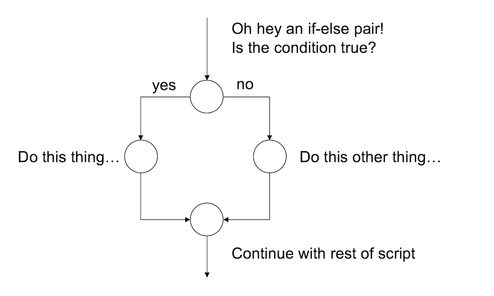

- Conditional branching
A second kind of flow control that programming languages provide is the ability to evaluate conditional statements. Unlike loops, which can repeat over and over again, a conditional statement only executes once, but it can switch between different possible commands depending on a condition that is specified by the programmer. The power of these commands is that they allow the program itself to make choices, and in particular, to make different choices depending on the context in which the program is run. The most prominent of example of a conditional statement is the if statement, and the accompanying else statement.1
8.1 If
The basic format of an if statement in R is as follows:
if ( CONDITION ) {
STATEMENT1
STATEMENT2
ETC
}And the execution of the statement is pretty straightforward. If the condition is TRUE, then R will execute the statements contained in the curly braces. If the condition is FALSE, then it does not. So the way R processes an if statement is illustrated by this schematic:

8.2 If-else
If you want to, you can extend the if statement to include an else statement as well, leading to the following syntax:
if ( CONDITION ) {
STATEMENT1
STATEMENT2
ETC
} else {
STATEMENT3
STATEMENT4
ETC
}As you’d expect, the interpretation of this version is similar. If the condition is TRUE, then the contents of the first block of code (i.e., statement1, statement2, etc) are executed; but if it is FALSE, then the contents of the second block of code (i.e., statement3, statement4, etc) are executed instead. So the schematic illustration of an if-else construction looks like this:

In other words, when we use an if-else pair, we can define different behaviour for our script for both cases.
8.3 An example
To give you a feel for how you can use if and else, the example that I’ll show you is a script (feelings.R) that prints out a different message depending the day of the week. Here’s the script:
if(today == "Monday") {
print("I don’t like Mondays")
} else {
print("I’m a happy little automaton")
}So let’s set the value of today to Monday and source the script:
today <- "Monday"
source("./scripts/feelings.R")## [1] "I don’t like Mondays"That’s very sad. However, tomorrow should be better:
today <- "Tuesday"
source("./scripts/feelings.R")## [1] "I’m a happy little automaton"8.4 Another example
One useful feature of if and else is that you can chain several of them together to switch between several different possibilities. For example, the more_feelings.R script contains this code:
if(today == "Monday") {
print("I don’t like Mondays")
} else if(today == "Tuesday") {
print("I’m a happy little automaton")
} else if(today == "Wednesday") {
print("Wednesday is beige")
} else {
print("eh, I have no feelings")
}This code allows our little 🤖 to have opinions about several different days. Imagine that we have a vector days that lists the name of every day of the week:
days <- c(
"Monday", "Tuesday","Wednesday",
"Thursday","Friday","Saturday",
"Sunday"
)Now let’s combine what we learned in the loops section with our new skills with if and else. Let’s loop over all the days and ask R to express some feelings on every day:
for(today in days) {
source("./scripts/more_feelings.R")
}## [1] "I don’t like Mondays"
## [1] "I’m a happy little automaton"
## [1] "Wednesday is beige"
## [1] "eh, I have no feelings"
## [1] "eh, I have no feelings"
## [1] "eh, I have no feelings"
## [1] "eh, I have no feelings"8.5 Exercises
- Write your own version of the “feelings” script that expresses your opinions about summer, winter, autumn and spring. Test your script out.
- Expand your script so that it loops over vector of four
seasonsand prints out your feelings about each of them
The solutions for these exercises are here.
There are other ways of making conditional statements in R. In particular, the
ifelsefunction and theswitchfunctions can be very useful in different contexts.↩